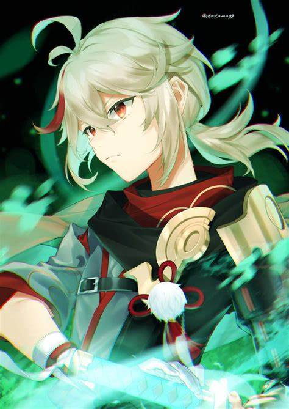

Arconte Geo:

Zhongli
Zhongli es el Arconte de Geo, el escudo mas poderoso y un personaje muy versatil.
Historia
Orígenes:
Rex Lapis: Zhongli es la forma mortal del Arconte Geo, Morax, quien gobernó Liyue durante miles de años.
Como Rex Lapis, fue venerado como el dios de los contratos y protector de la región. Su filosofía se centra en la estabilidad y el cumplimiento de acuerdos, valores que moldearon la cultura de Liyue.
Renuncia a su divinidad: En los eventos del juego, Zhongli decide abandonar su posición como Arconte Geo para permitir que los ciudadanos de Liyue aprendan a gobernarse por sí mismos.
Este acto refleja su confianza en el crecimiento y madurez de su pueblo.
Personalidad:
Sabio y filosófico: Zhongli tiene una personalidad tranquila y reflexiva, con una perspectiva filosófica sobre la vida. A menudo comparte enseñanzas profundas inspiradas en pensadores chinos como Confucio y Lao Zi.Olvidadizo con el dinero: Aunque es extremadamente sabio, Zhongli tiene una peculiaridad cómica: nunca lleva dinero consigo, lo que genera situaciones humorísticas en sus interacciones con otros personajes.
Amante de la historia: Zhongli tiene un profundo conocimiento sobre la historia y los mitos de Teyvat, lo que lo convierte en una fuente valiosa para comprender el lore del juego.
Mala suerte:
Zhongli utiliza una lanza y controla el elemento Geo. Es conocido por ser uno de los personajes más versátiles del juego debido a sus capacidades defensivas y ofensivas.Habilidad Elemental: Dominus Lapidis:
Invoca un pilar de piedra que inflige daño Geo continuo a los enemigos cercanos.
Crea un escudo de jade extremadamente duradero que absorbe daño basado en su HP máximo.
Ráfaga Elemental: Planet Befall:
Invoca un meteorito masivo que inflige daño Geo masivo y petrifica a los enemigos durante unos segundos.
Pasivas: Sus habilidades aumentan en potencia según su HP máximo.
Reduce el consumo de resistencia al escalar superficies cuando está en tu equipo.
Mejor equipo:
- Kaedhara Kazuha (Apoyo) 
- Furina (Sub DPS)
- Neuvillette (DPS)
Clic en la imagen.

Clic en la imagen.